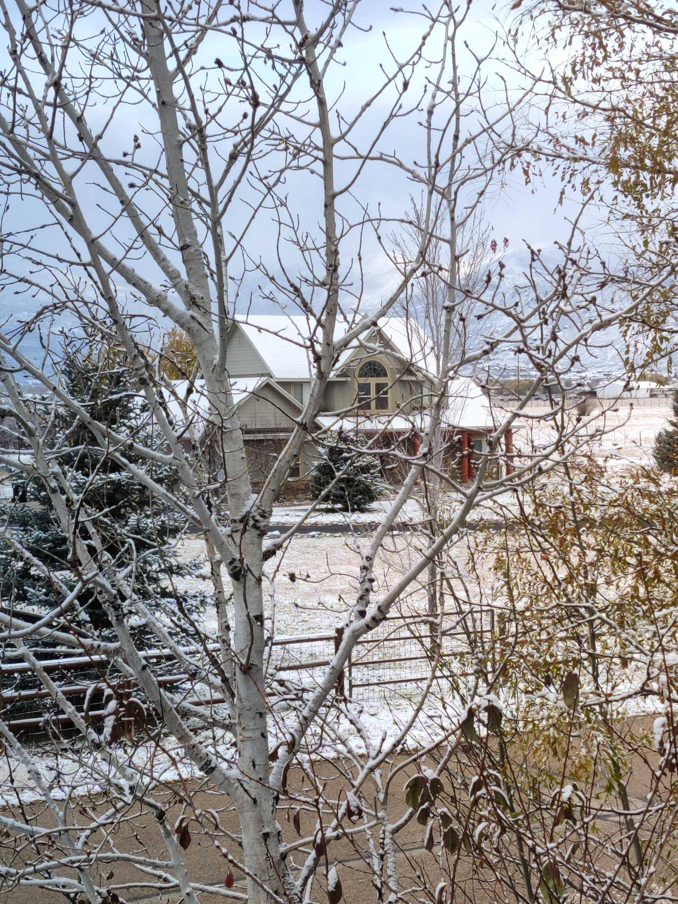

Without a doubt the worst aspect of Heber is the weather. For more than half the year you are unable to enjoy nice weather and fun activities outside of winter sports, which are overrated.
There are many times I consider leaving this town for this very reason.
Historic Locations!

Random House
Heber has an extensive history and many historical locations to visit and enjoy. From the historic Heber Creeper and Heber train station, to the many monuments, memorials. and buildings, Heber has many interesting locations to visit.
Wildlife!
Dawg
Heber is home to many different kinds of Wildlife. This includes many forms of deer, and some other things that I dont know/remember. Also my dog